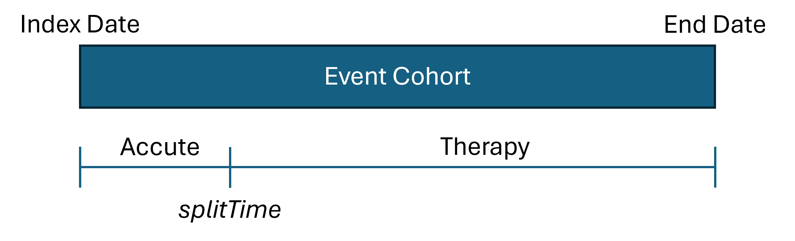

Target and Event cohorts
TreatmentPatterns build pathways of event cohorts, that occur during a target cohort. A target cohort in published studies is usually a disease. But other use cases is also valid. Like an exposure window to a drug or treatment.
Events are things that happen during the target cohort window. For published studies these are usually exposures to drugs or treatments during a disease. To re-frame that into a research question: “What is the order and pathway of treatments during an infection”.
Our target cohort would be the infection itself, the event cohorts would be the treatments that occur during the infection.
TreatmentPatterns needs to know which cohort is a target cohort and
which is an event cohort. This can be derived from the cohort set table,
usually generated by either CDMConnector or
CohortGenerator. To let TreatmentPatterns know which cohort
is what kind, we supply a table that contains a 1) ID, 2) Name, and 3)
cohort type. As an example:
| cohortId | cohortName | type |
|---|---|---|
| 1 | Infection | target |
| 2 | Treatment A | event |
| 3 | Treatment B | event |
| 4 | Treatment C | event |
Like mentioned earlier this table can be easily dirived from a cohort
set generated by CohortGenerator or
CDMConnector. Here is an example that uses
CDMConnector. The target cohort is Viral
Sinusitis, the events are several treatments:
library(dplyr)
library(CDMConnector)
cohortSet <- readCohortSet(
path = system.file(package = "TreatmentPatterns", "exampleCohorts")
)
cohorts <- cohortSet %>%
# Remove 'cohort' and 'json' columns
select(-"cohort", -"json", -"cohort_name_snakecase") %>%
mutate(type = c("event", "event", "event", "event", "exit", "event", "event", "target")) %>%
rename(
cohortId = "cohort_definition_id",
cohortName = "cohort_name",
)
cohorts## # A tibble: 8 × 3
## cohortId cohortName type
## <int> <chr> <chr>
## 1 1 acetaminophen event
## 2 2 amoxicillin event
## 3 3 aspirin event
## 4 4 clavulanate event
## 5 5 death exit
## 6 6 doxylamine event
## 7 7 penicillinv event
## 8 8 viralsinusitis targetDatabase interface
TreatmentPatterns can connect to a database with either
CDMConnector using the CDM-Reference or with
DatabaseConnector using the ConnectionDetails. The
main difference between the two is that the connection to the database
is managed by TreatmentPatterns when using
DatabaseConnector. When using CDMConnector,
the connectoin is managed outside of TreatmentPatterns. Either case may
be useful depending on the environment TreatmentPatterns is run in.
It is worth noting that it does not matter how you create your
cohorts. You can use any means to generate a cohort table your heart
desires. You can use OHDSI tools like ATLAS or
Capr to specify cohort definitions. You can generate
them by executing the raw SQL from Circe, or generate
them with CohortGenerator or CDMConnector. The
only thing that matters is that the resulting cohort table:
| cohort_definition_id | subject_id | cohort_start_date | cohort_end_date |
|---|---|---|---|
| 1 | 1 | 2020-01-01 | 2020-12-31 |
| 2 | 1 | 2020-02-04 | 2020-06-27 |
| 3 | 1 | 2020-07-03 | 2020-08-12 |
| 4 | 1 | 2020-08-30 | 2020-11-29 |
| 1 | 2 | 2020-03-01 | 2020-10-30 |
| 2 | 2 | 2020-05-04 | 2020-06-27 |
| 4 | 2 | 2020-10-03 | 2020-10-12 |
CDMConnector
We can use CDMConnector to generate cohorts from JSON
definitions into the cohrot_table table in our database.
## Downloading GiBleed##
## Download completed!## Creating CDM database /tmp/RtmpOqxCD6/file2e5c511d64cb/GiBleed_5.3.zip
cdm <- cdmFromCon(
con = con,
cdmSchema = "main",
writeSchema = "main"
)
cdm <- generateCohortSet(
cdm = cdm,
cohortSet = cohortSet,
name = "cohort_table",
overwrite = TRUE
)## ℹ Generating 8 cohorts
## ℹ Generating cohort (1/8) - acetaminophen
## ✔ Generating cohort (1/8) - acetaminophen [348ms]
##
## ℹ Generating cohort (2/8) - amoxicillin
## ✔ Generating cohort (2/8) - amoxicillin [188ms]
##
## ℹ Generating cohort (3/8) - aspirin
## ✔ Generating cohort (3/8) - aspirin [171ms]
##
## ℹ Generating cohort (4/8) - clavulanate
## ✔ Generating cohort (4/8) - clavulanate [166ms]
##
## ℹ Generating cohort (5/8) - death
## ✔ Generating cohort (5/8) - death [129ms]
##
## ℹ Generating cohort (6/8) - doxylamine
## ✔ Generating cohort (6/8) - doxylamine [148ms]
##
## ℹ Generating cohort (7/8) - penicillinv
## ✔ Generating cohort (7/8) - penicillinv [162ms]
##
## ℹ Generating cohort (8/8) - viralsinusitis
## ✔ Generating cohort (8/8) - viralsinusitis [231ms]Once we have our cohort generated, and our CDM-reference is setup, we
can simply pass the CDM-reference to computePathways().
outputEnv <- computePathways(
cohorts = cohorts,
cohortTableName = "cohort_table",
cdm = cdm
)DatabaseConnector
Similarly we can create ConnectionDetails to our
database:
library(DatabaseConnector)
connectionDetails <- createConnectionDetails(
dbms = "postgres",
user = "user",
password = "password",
server = "some-server.database.net",
port = 1337,
pathToDriver = "./path/to/jdbc/"
)
outputEnv <- computePathways(
cohorts = cohorts,
cohortTableName = "cohort_table",
connectionDetails = connectionDetails,
cdmSchema = "main",
resultSchema = "main",
tempEmulationSchema = NULL,
)We still have to specify the cdmSchema,
resultSchema, and tempEmulationSchema (when
applicable). For the CDM-Reference from CDMConnector, this
is handled outside of TreatmentPatterns.
Analysis
We can specify some analysis identification parameters to keep track
of multiple analyses. This is particularly useful when uploading
multiple results to one database. We can use analysisId to
keep them seperate. We can also add a description to give
some context.
outputEnv <- computePathways(
cohorts = cohorts,
cohortTableName = "cohort_table",
cdm = cdm,
analysisId = 1,
description = "My First Treatment Patterns Analysis"
)Events
TreatmentPatterns will build pathways from specified events. We have
control over how long these events should last, at minimum. We can do
this by setting the minEraDuration. Any event that lasts
shorter than the specified minEraDuration is not considered
as a valid event. We can also specify which events to consider for our
pathway by specifying a method in filterTreatments.
"first" only takes the first occurrence of each event.
"All" will consider all events and "Changes"
will only consider events that of which the next event is different than
itself.


When we set filterTreatments = "All" we can additionally
collapse multiple occurring records of one event, into one record. The
eraCollapseSize specifies the gap that between two of the
same event that should be collapsed.

computePathways(
cohorts = cohorts,
cohortTableName = "cohort_table",
cdm = cdm,
minEraDuration = 30,
eraCollapseSize = 30,
filterTreatments = "First"
)Combinations
TreatmentPatterns can classify combination events within the supplied
events. It will look for overlap for all the occurring events. Not all
overlap is classified as a combination. This is dictated by the
combinationWindow parameter. This parameter specifies the
minimum duration of overlap between two events to classify as a
combination-event.

Effectively we split the two event records in three records: 1) Event A, 2) Event B, and 3) The combination of event B and C.
The minPostCombinationDuration parameter dictates what
to do with the newly created events records. Because we could end up
with a remaining duration of Event A and Event B that will only last 1
day. minPostCombinationDuration dictates the minimum
duration of these newly created records, removing events that last
shorter then the specified time in days. It is therefore usually unwise
to specify the minEraDuration smaller than the
combinationWindow.
computePathways(
cohorts = cohorts,
cohortTableName = "cohort_table",
cdm = cdm,
combinationWindow = 30,
minPostCombinationDuration = 30
)Non-Significant Overlap
Overlap is deemed not significant, the event transition is classified
as a switch of events. The first treatment is then trucated to
the index date of the overlapping event (in this case Event
B). If you’re only interrested in the final pathways that
TreatmentPatterns generates, this does not influence your resulting
pathways (barring some edge cases). However when you’d like to
investigate the patient-level records generated by
computePathways() this might lead to undesired end
dates.

Overlap Method
The overlapMethod parameter allows you to specify what
method to use to deal with this non-significant overlap:
"truncate" to truncate the first event, as described
before:
outputEnv <- computePathways(
cohorts = cohorts,
cohortTableName = "cohort_table",
cdm = cdm,
overlapMethod = "truncate"
)Or "keep", to keep the start and end dates of both
records intact:
outputEnv <- computePathways(
cohorts = cohorts,
cohortTableName = "cohort_table",
cdm = cdm,
overlapMethod = "keep"
)Acute and Therapy Splits
We can split specific events into acute and therapy
events. We do this by selecting our events of interest by
cohort_definition_id (or cohortId) in the
splitEventCOhorts parameter. We then set a cutoff for the
minimum amount of days we would like to classify as
therapy with splitTime. The first n days
will be classified as acute and remaining duration will be
classified as therapy.

Let’s say we want to assume that the first 60 days of our treatment is acute, and beyond that therapy.
outputEnv <- computePathways(
cohorts = cohorts,
cohortTableName = "cohort_table",
cdm = cdm,
splitEventCohorts = c(1, 2),
splitTime = 30
)
Event Windows
Anchoring
The computePathways() function has two ‘anchor’
arguments, startAnchor and endAnchor. These
arguments dictate what point to use as a reference. The two values that
you can set for both of these parameters are: "startDate"
and "endDate", referencing the
cohort_start_date and cohort_end_date columns
in the cohort table. By default they are set to:
startAnchor = "startDate" and
endAnchor = "endDate"
windowStart and windowEnd
The windowStart and windowEnd parameters
dictate an offset from their corresponding anchor. If we
assuming the following parameters (defaults):
startAnchor = "startDate"
windowStart = 0
endAnchor = "endDate"
windowEnd = 0We will just use the cohort_start_date and
cohort_end_date as our window of interest.
outputEnv <- computePathways(
cohorts = cohorts,
cohortTableName = "cohort_table",
cdm = cdm,
startAnchor = "startDate",
windowStart = 0,
endAnchor = "endDate",
windowEnd = 0
)
We can extend our window with a 30 days on either side by altering
the windowStart and windowEnd variables:
startAnchor = "startDate"
windowStart = -30
endAnchor = "endDate"
windowEnd = 30Note that windowStart = -30, as in we subtract 30 days
from the startAnchor. windowEnd = 30 as in we
add 30 days to the endAnchor.
outputEnv <- computePathways(
cohorts = cohorts,
cohortTableName = "cohort_table",
cdm = cdm,
startAnchor = "startDate",
windowStart = -30,
endAnchor = "endDate",
windowEnd = 30
)
Changing the anchoring
We can change the anchoring of startAnchor and
endAnchor to set our window to a period prior to the index
date:
startAnchor = "startDate"
windowStart = -30
endAnchor = "startDate"
windowEnd = 0Note that we set both the startAnchor
and endAnchor are set to "startDate". So we
start -30 days from the index date, and end on the index date.
outputEnv <- computePathways(
cohorts = cohorts,
cohortTableName = "cohort_table",
cdm = cdm,
startAnchor = "startDate",
windowStart = -30,
endAnchor = "startDate",
windowEnd = 0
) ## Pathways Finally we can
also dictate some parameters of the pathway. We can specify the maximum
length of the pathways with
## Pathways Finally we can
also dictate some parameters of the pathway. We can specify the maximum
length of the pathways with maxPathLength. This parameter
will truncate the pathways that exceed the set limit.
We can also set concatTargets to either
TRUE or FALSE. When set to TRUE
it will append multiple cases, which might be useful for time invariant
target cohorts like chronic conditions. If you would like to evaluate
each occurrence of a target cohort seperately, we can set it to
FALSE.
Running the analysis
After careful consideration of the settings, we can run our Treatment Patterns analysis:
library(TreatmentPatterns)
# Computing pathways
outputEnv <- computePathways(
cohorts = cohorts,
cohortTableName = "cohort_table",
cdm = cdm,
analysisId = 1,
description = "My Treatment Pathway analysis",
# Window
startAnchor = "startDate",
windowStart = 0,
endAnchor = "endDate",
windowEnd = 0,
# Acute / Therapy
splitEventCohorts = NULL,
splitTime = NULL,
# Events
minEraDuration = 7,
filterTreatments = "All",
eraCollapseSize = 3,
# Combinations
combinationWindow = 7,
minPostCombinationDuration = 7,
overlapMethod = "truncate",
# Pathways
maxPathLength = 10,
concatTargets = FALSE
)## -- Qualifying records for cohort definitions: 1, 2, 3, 4, 5, 6, 7, 8
## Records: 14041
## Subjects: 2693## -- Removing records < minEraDuration (7)
## Records: 11347
## Subjects: 2159## >> Starting on target: 8 (viralsinusitis)## -- Removing events outside window (startDate: 0 | endDate: 0)
## Records: 8327
## Subjects: 2142## -- splitEventCohorts
## Records: 8327
## Subjects: 2142## -- Collapsing eras, eraCollapse (3)
## Records: 8327
## Subjects: 2142## -- Iteration 1: minPostCombinationDuration (7), combinatinoWindow (7)
## Records: 6799
## Subjects: 2142## -- Iteration 2: minPostCombinationDuration (7), combinatinoWindow (7)
## Records: 6663
## Subjects: 2142## -- Iteration 3: minPostCombinationDuration (7), combinatinoWindow (7)
## Records: 6662
## Subjects: 2142## -- After Combination
## Records: 6662
## Subjects: 2142## -- filterTreatments (All)
## Records: 6662
## Subjects: 2142## -- Max path length (10)
## Records: 6662
## Subjects: 2142## -- treatment construction done
## Records: 6662
## Subjects: 2142The result is an Andromeda object that contains
patient-level data. We will go into exporting the results to share-able
files in the Exporting vignette.